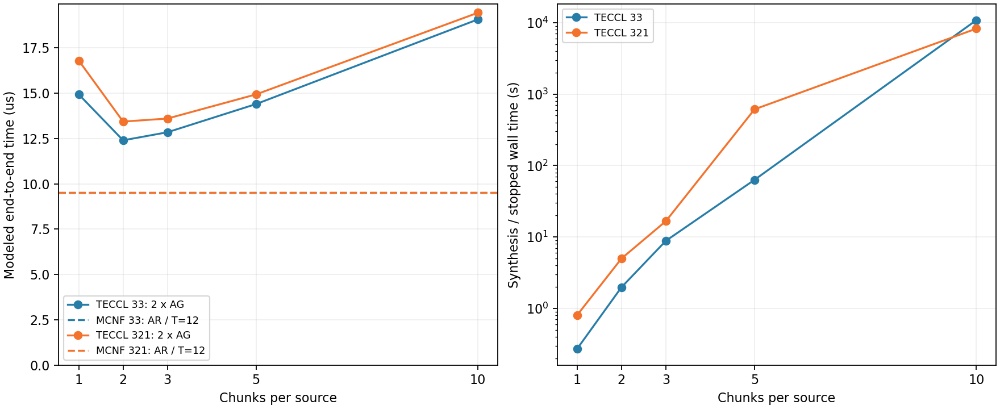

WH1234，3+3 / 3+2+1：均为 1/2/3/5/10 块。每项 Gurobi TimeLimit=10800 s，四线程、Seed42；外层墙钟 11400 s，RSS 16 GiB，串行队列。每卡完整向量 250000 bytes，AG 每来源 1/6，每来源 c 块，每块 250000/(6c) bytes；每有向链路 400 Gbps，每实际活跃 epoch 0.1 us。AR 按完整 AG 时间二倍估算。本轮重跑不覆盖旧六卡 60 秒实验。
队列 COMPLETED，已完成 14/14。

| Case | 状态 | 已验收 | AG(us) | AR=2AG(us) | MCNF(us) | 优化(s) | 合成/中止(s) |
|---|---|---|---|---|---|---|---|
| 33_mcnf_allgather | optimal | True | — | — | 5.36667 | 0.0847881 | 0.521276 |
| 33_mcnf_allreduce | optimal | True | — | — | 9.53333 | 0.191123 | 0.699252 |
| 321_mcnf_allgather | optimal | True | — | — | 5.67917 | 0.0959349 | 0.487224 |
| 321_mcnf_allreduce | optimal | True | — | — | 9.53333 | 0.277416 | 0.81392 |
| 33_c1 | OPTIMAL | True | 7.46667 | 14.9333 | — | 0.152314 | 0.272607 |
| 321_c1 | OPTIMAL | True | 8.4 | 16.8 | — | 0.556751 | 0.806637 |
| 33_c2 | OPTIMAL | True | 6.2 | 12.4 | — | 1.59953 | 1.98054 |
| 321_c2 | OPTIMAL | True | 6.71667 | 13.4333 | — | 4.49271 | 4.99741 |
| 33_c3 | OPTIMAL | True | 6.42222 | 12.8444 | — | 7.96259 | 8.82716 |
| 321_c3 | OPTIMAL | True | 6.8 | 13.6 | — | 15.9007 | 16.6512 |
| 33_c5 | OPTIMAL | True | 7.2 | 14.4 | — | 61.6036 | 63.1155 |
| 321_c5 | OPTIMAL | True | 7.46667 | 14.9333 | — | 610.282 | 612.138 |
| 33_c10 | TIME_LIMIT | True | 9.53333 | 19.0667 | — | 10800.2 | 10805.9 |
| 321_c10 | OPTIMAL | True | 9.71667 | 19.4333 | — | 8220.25 | 8227.1 |
TECCL 以固定块和逐物理跳 epoch 建模，MCNF 使用连续分片、可变步长的逻辑 GPU 路由。MCNF 为 HWC / T=12 / main-only，AG 沿用公开 broadcast 支持的 HWC 模式（去掉 ahc_2level），直接 AR 使用完整 HWC；启动费是保存调度的事后评估，未重新优化。TIME_LIMIT 与无 incumbent 保留为原状态；未验收行没有通信时间。没有硬件实测，WH1234 Gurobi 12.0.3 的计算耗时不与旧 Mac Gurobi 13.0.0 直接混为同机测速。